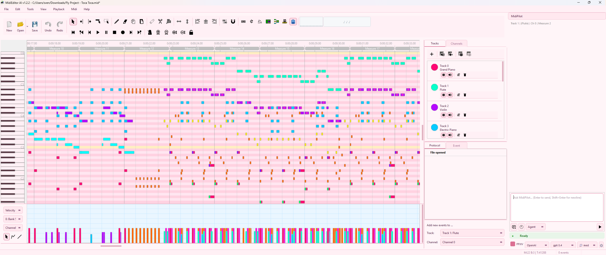
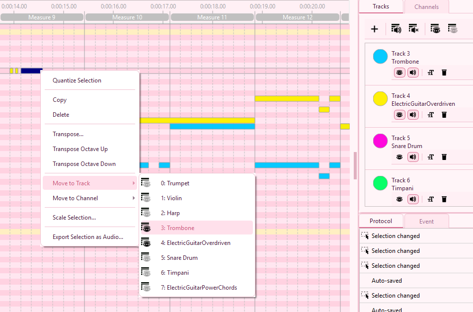
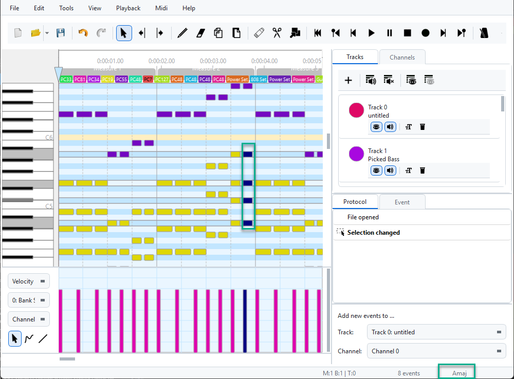

The Editor and its Components
The following screenshot shows the editor in use:

On the top of the editor there are the menubar and the toolbar which contain buttons to load and save files, to play the currently loaded file, or to edit the file's content. Moreover, the settings can be accessed from the menubar and additional tools, such as the metronome, can be controlled from the menues.
Below the toolbar, the mainscreen is split into two parts. On the left side, there is the event view, which shows all events, and a view which can be used to visualize and edit the velocity for each note as well as the different controller values, the pitch for each channel, or the key/channel pressure.
On the right side, there are different windows allowing the user to edit the tracks and channels, to visualize the protocol of all actions the user did, and to edit all properties of the selected event(s).
Menubar
Most actions which can be performed by the user are accessible using the menubar. The actions are structured within the following submenus. For the Tools menu, see the dedicated Tools Menu page.
📂 File Menu
| New Creates a new, empty MIDI file. |
|
| Open… Open an existing MIDI file. Also imports Guitar Pro ( .gp, .gp3, .gp4, .gp5, .gpx, .gtp), MusicXML (.musicxml, .xml, .mxl), and MuseScore (.mscz, .mscx) files — auto-converted to MIDI on open. See Supported Files. |
|
| Open recent… Open a recently opened file from the history list. |
|
| Save Save the current MIDI file. |
|
| Save as… Save the current MIDI file at a given path. |
|
| Quit Close MidiEditor AI. |
✏️ Edit Menu
| Undo Undo the last action. |
|
| Redo Redo the last undone action. |
|
| Select all Select all currently visible events. |
|
| Select all events from channel… Select all events assigned to a given channel. |
|
| Select all events from track… Select all events assigned to a given track. |
|
| Copy events Copy all selected events to the clipboard. |
|
| Paste events Paste copied events from the clipboard. The first event starts at the cursor position. Use Paste options to control target track and channel. |
|
| Paste options… Choose whether pasted events keep their original track/channel or get assigned to a fixed track/channel. |
|
| Settings… Opens the Settings dialog. |
👁️ View Menu
| Zoom… Zoom in/out horizontally and vertically, or restore default zoom settings. |
|
| Show all channels Sets all channels to visible. |
|
| Hide all channels Hides all channels. Events from hidden channels are not displayed. |
|
| Show all tracks Sets all tracks to visible. |
|
| Hide all tracks Hides all tracks. Events from hidden tracks are not displayed. |
|
| Colors… Choose whether event colors represent channels or tracks. See also Themes & Appearance. |
|
| Raster Customize the grid raster in the event view. Set to quarter notes, 8ths, 16ths, etc. See Magnet & Raster. |
▶️ Playback Menu
Controls playback, recording, and the metronome. See the Playback & Recording page for full details.
🎹 MIDI Menu
| Settings… Opens the Settings dialog for MIDI I/O configuration. |
|
| Connect MIDI In/Out Routes the input device to the output so played notes are audible. See details. |
|
| MIDI Panic Sends an all-notes-off signal to the output device. Silences stuck notes. |
Toolbar
The toolbar contains items from the menubar in order to provide quick access to the most frequently used actions.
Event View
The event view is the most important part of the editor. It visualizes the events in the loaded Midi file. Moreover, most editing can be done in this window.
All events are colored, where the colors can either be chosen to represent the event's channel or its track.

Notes are diplayed as bars. The rows of the event view represent the different notes according to the piano roll on the left. The horizontal length of a notes represents the note's duration according to the time line on the top of the window.
Below the notes the other events are shown. The row names below the piano roll indicate the event type shown in each row.
In order to edit the content of a Midi file, the user has to select a tool in the menubar or in the toolbar. After that, the user can select events in the event view and move the events, change the notes' durations, create new events, and remove events.
Below the event view, the velocities of all notes, the controllers, the key/channel pressure, and the pitch of each channel can be edited and visualized. The user can select the data to show and edit on the left of the window.
Context Menu — Visibility at a Glance (new in v1.4.2)
Right-clicking any note in the event view opens a context menu with quick reassignment shortcuts. Both the Move to Track and Move to Channel submenus now display a small visibility icon next to every entry, so you can see at a glance which tracks and channels are currently shown without first opening the side panels:
 — track or channel is currently visible (and audible)
— track or channel is currently visible (and audible) — track or channel is hidden
— track or channel is hidden
{kind=link}

Eye icons indicate which tracks and channels are currently visible.
Track Editor

The track editor contains a list of all tracks in the currently loaded Midi file. The list shows
the names of the tracks as well as their numbers and the tracks' colors. Moreover, the track editor
enables the user to hide or mute specific channels (by clicking  and
and  ),
to rename a track (by clicking
),
to rename a track (by clicking  ) or to delete
a track (by clicking
) or to delete
a track (by clicking  ).
).
New tracks can be added to the Midi file by clicking  .
.
In order to mute or hide all tracks at once, the according actions above the track list can be used.
Please refer to Tracks and Channels for more details about the track editor.
Channel Editor
Similar to the track editor, a list of all channels is provided in the channel editor. Channels can be hidden or muted (by clicking and ). Moreover, the solo mode (by clicking  ) can be activated for a specific channel which will make the channel
be the only audible channel until the solo mode is deactivated.
) can be activated for a specific channel which will make the channel
be the only audible channel until the solo mode is deactivated.
As an instrument (or "voice") is assigned to each channel at each time, the channels' instruments can be assigned by clicking  . This will open a dialog which lets the user specify the instrument for the given channel.
. This will open a dialog which lets the user specify the instrument for the given channel.
Please refer to Tracks and Channels for more details about the channel editor.
Event Editor

Once one or more events have been selected, the events' data will be visualized inside the event editor. The data is provided as a table containing property-value pairs. Double-clicking inside any value-field will allow the user to modify the propertie's value which will set the new value to all selected events immediately.
In the case of multiple selected events, the editor will only show the values which are equal for all selected events. Assigning new values to those initially empty values will set the value for all selected events.
Status Bar & Chord Detection
At the bottom of the editor window, the Status Bar displays contextual information about your current selection and position:
- Selected note info — note name, octave, MIDI number, velocity, and duration
- Chord analysis — automatically detects chords from selected notes (major, minor, 7th, dim, aug, sus, and more)
- Tick position — current cursor position in ticks
- Event count — number of selected events
{kind=link}

The status bar with chord detection — selecting notes shows the detected chord name.
Toggle the status bar in Settings → System & Performance.